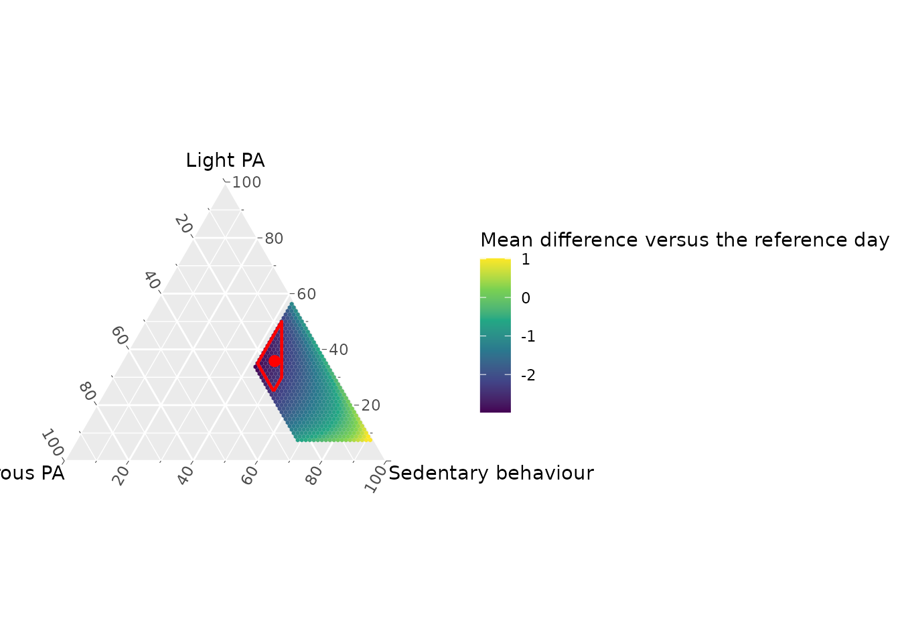
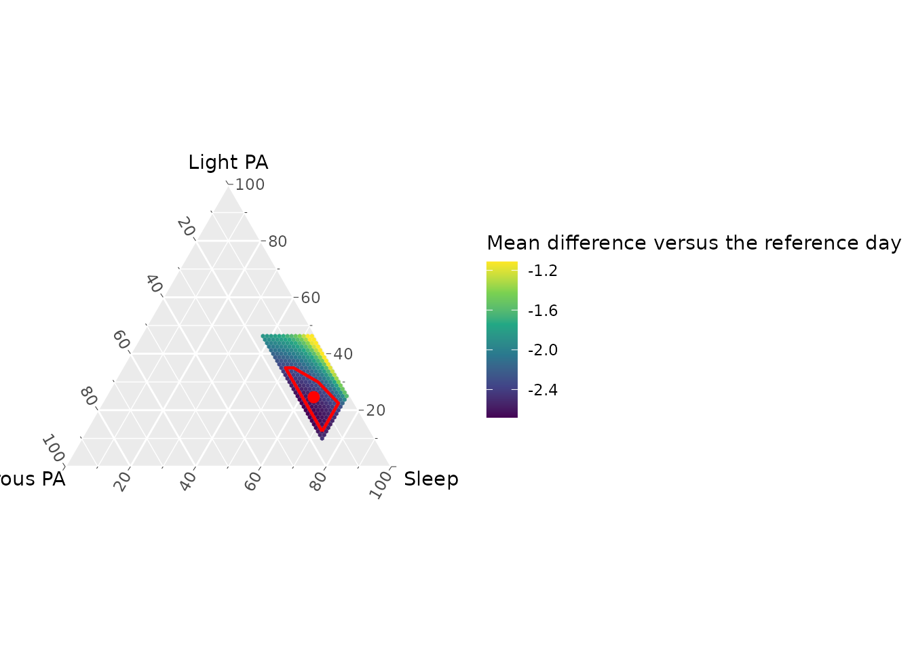
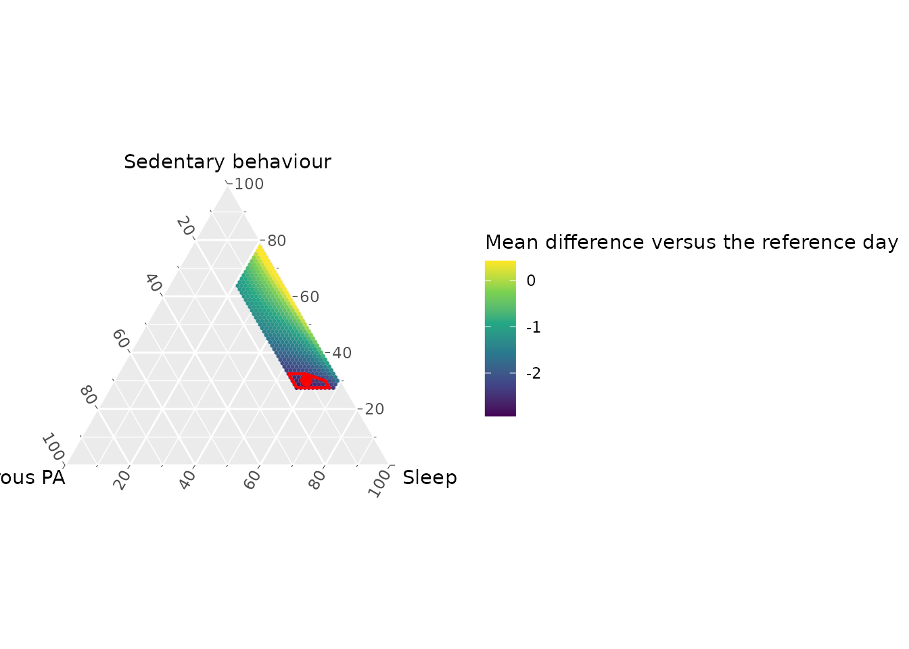
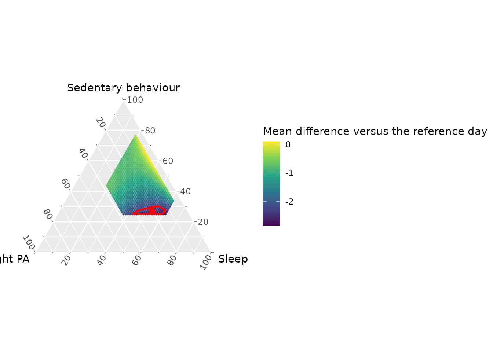
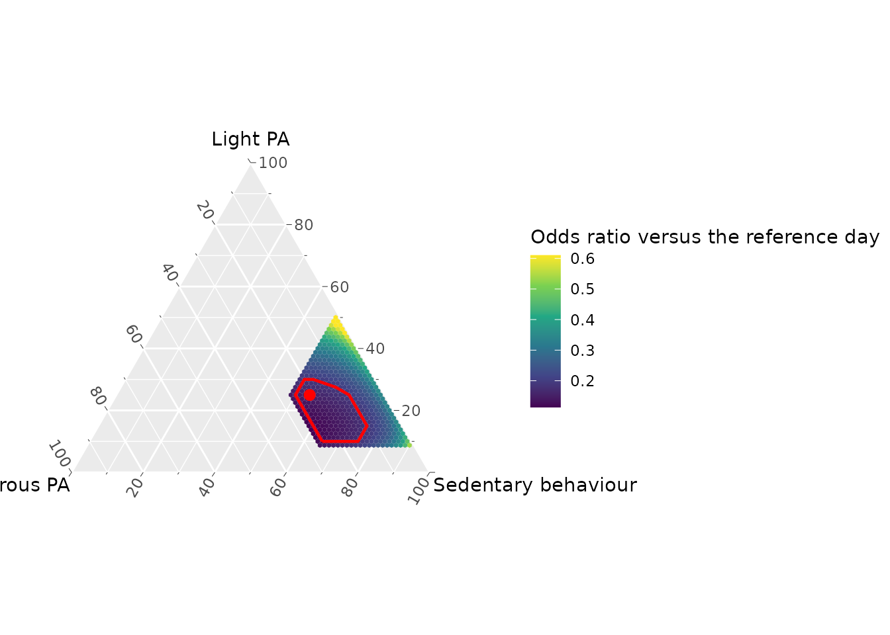
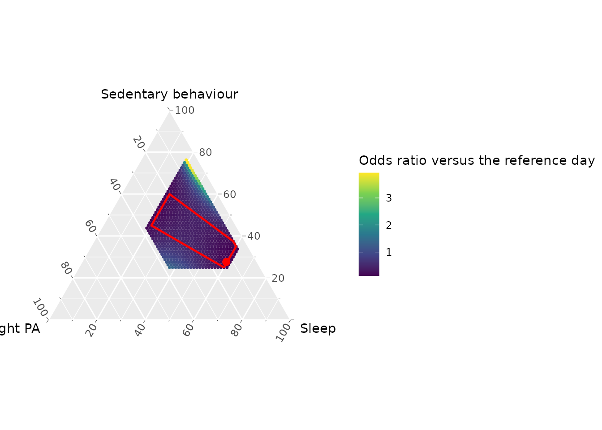

optimal_composition() searches a fitted model for the
compositions with the best predicted outcome. The search has seven
steps.
![Flowchart of the optimal_composition() pipeline: one comp_iv fit, or one fit per outcome, enters; the feasible region is estimated from the sample's compositions, as a per-part box by default, the observed compositions or a data frame; candidate compositions are placed on a grid in closure units inside the region, by default every 10 minutes of a 1,440-minute day; each outcome is predicted at every candidate on a few emmeans grids; each outcome's zone keeps the best share of its predictions, or those meeting a threshold; with several outcomes the zones are intersected, and widened only with widen = TRUE; each zone is summarized by its closed geometric mean and per-part range; and the prediction at the zone centre is contrasted with the reference day as the gain. The result is an optimal_comp object read by print() and plot().](goldilocks-pipeline.svg)
The question the search answers
A Goldilocks zone is the set of daily compositions with the best predicted values of a health outcome, and the optimal composition is the centre of that set. Dumuid et al. (2021) evaluated every composition on a 10-minute grid inside a per-part box around the sample mean, kept the best 5% of the predictions as each outcome’s zone, and took the compositional centre of the zones’ overlap.
optimal_composition() searches the same kind of grid,
and because the candidates are fixed, a repeated search of the same fit
returns the same centre. The region and the grid are the same whatever
the order of the parts.
The example data and the two fits
The examples use the bundled timeuse data, described in
vignette("composition-variable", package = "timecoda").
Because the data are simulated, the zones illustrate the computation and
have no substantive interpretation.
cd <- declare_composition(
data = timeuse,
parts = c("MVPA", "LPA", "SB", "SPT"),
closure = 1440,
units = "min/day",
labels = c(
MVPA = "Moderate-to-vigorous PA",
LPA = "Light PA",
SB = "Sedentary behaviour",
SPT = "Sleep"
)
)A model whose linear predictor is linear in the isometric log-ratio (ILR) coordinates has no interior optimum. To find a Goldilocks zone inside the region, you need a fit that curves in the composition.
fit_bmi is a linear model of the body-mass-index z-score
(zbmi) and fit_ob a logistic regression of the
obesity indicator (obesity), each adjusted for sex. Both
are fitted with curvature = TRUE, which writes the full
quadratic in the coordinates, so each equals the fit of the formula
ilr()^2 + I(ilr()^2) shown in
vignette("advanced-models", package = "timecoda").
Part 1. One complete call
A lower z-BMI is the better outcome, so search fit_bmi
with direction = "min". The other five arguments are
written at the values a default call uses for this 1,440-minute
composition (i.e., the box of the mean plus or minus 3 SD, on a
10-minute grid).
opt <- optimal_composition(
object = fit_bmi,
direction = "min",
zone = 0.95,
region = "box",
sd = 3,
spacing = 10,
type = "relative"
)
opt
#> <optimal_comp> Goldilocks-zone search over Moderate-to-vigorous PA, Light PA, Sedentary behaviour, Sleep (total = 1440 min/day)
#> Region: per-part box of the mean +/- 3 SD; candidates on multiples of 10 min/day
#> Limits: MVPA 0.1 to 180.0 min/day, LPA 51.8 to 503.3 min/day, SB 315.6 to 1013.4 min/day, SPT 239.9 to 809.4 min/day
#> 4 of 8 box limits are the observed minimum or maximum of their part (lower: MVPA, LPA, SB, SPT)
#> Scale: Mean difference versus the reference day
#> Zone rule: zbmi, the best 5% of predictions (lower is better)
#> 36,611 candidate compositions inside the region
#> Zone for zbmi: 1831 compositions (centre [min; max], min/day)
#> Moderate-to-vigorous PA 125.2 [30.0; 170.0]
#> Light PA 267.2 [110.0; 480.0]
#> Sedentary behaviour 353.9 [320.0; 410.0]
#> Sleep 693.6 [470.0; 800.0]
#> Gain from the reference day to the zone centre (95% CI):
#> zbmi: Mean difference -2.54 [-3.2; -1.88], p = 5.44e-13The centre of a zone is the closed geometric mean of its
compositions, and the brackets give the smallest and largest value of
each part among them. Under the default type = "relative",
each candidate is valued by its mean difference in z-BMI from the
reference day (the Scale line), and the reference day is
the reference composition described in
vignette("predicting-reallocations", package = "timecoda").
The gain is the contrast between the zone centre and the reference
day, averaged over sex as in the reference grid of
predict_realloc(). At the centre, the predicted z-BMI is
2.54 lower. The gain’s confidence interval is conditional on the centre,
and the location of the zone has no interval of its own (see
?optimal_composition).
When more than half of the zone’s compositions lie in the outer shell
of the region (i.e., with a part within one spacing of its
limit), a further line appears under the zone and states that the best
composition may lie beyond the edge of the region.
Part 2. The arguments in turn
The region
The search is confined to a feasible region, which you choose with
region (for the choices, see
?optimal_composition). The default "box"
limits each part separately, on the closure scale, to its mean plus or
minus sd standard deviations (3 by default, as in Dumuid et
al., 2021). Such a limit never extends beyond the part’s observed range
in this package, and the limits cut to that range are counted in the
printed result.
To set the limits of the box by each part’s quantiles in place of
sd, use coverage. Brakenridge et al. (2024)
limited each part to its 1st and 99th percentiles.
optimal_composition(object = fit_bmi, direction = "min",
coverage = c(0.01, 0.99))
#> <optimal_comp> Goldilocks-zone search over Moderate-to-vigorous PA, Light PA, Sedentary behaviour, Sleep (total = 1440 min/day)
#> Region: per-part box from the 1st to the 99th percentile; candidates on multiples of 10 min/day
#> Limits: MVPA 1.2 to 199.0 min/day, LPA 68.0 to 422.0 min/day, SB 390.9 to 925.0 min/day, SPT 255.4 to 739.9 min/day
#> Scale: Mean difference versus the reference day
#> Zone rule: zbmi, the best 5% of predictions (lower is better)
#> 27,018 candidate compositions inside the region
#> Zone for zbmi: 1351 compositions (centre [min; max], min/day)
#> Moderate-to-vigorous PA 150.4 [60.0; 190.0]
#> Light PA 242.6 [100.0; 420.0]
#> Sedentary behaviour 428.9 [400.0; 480.0]
#> Sleep 618.0 [430.0; 730.0]
#> Gain from the reference day to the zone centre (95% CI):
#> zbmi: Mean difference -2.07 [-2.52; -1.63], p = <2e-16To search the compositions of the sample, set
region = "observed". The 300 compositions of the sample are
then the candidates in place of the grid, as in Lund Rasmussen et
al. (2023).
optimal_composition(object = fit_bmi, direction = "min", region = "observed")
#> <optimal_comp> Goldilocks-zone search over Moderate-to-vigorous PA, Light PA, Sedentary behaviour, Sleep (total = 1440 min/day)
#> Region: the sample's own compositions
#> Candidates span: MVPA 0.1 to 240.0 min/day, LPA 51.8 to 504.3 min/day, SB 315.6 to 1036.9 min/day, SPT 239.9 to 815.2 min/day
#> Scale: Mean difference versus the reference day
#> Zone rule: zbmi, the best 5% of predictions (lower is better)
#> 300 candidate compositions inside the region
#> Zone for zbmi: 16 compositions (centre [min; max], min/day)
#> Moderate-to-vigorous PA 112.2 [46.0; 240.0]
#> Light PA 262.2 [185.3; 361.9]
#> Sedentary behaviour 454.0 [315.6; 552.0]
#> Sleep 611.5 [447.7; 815.2]
#> Gain from the reference day to the zone centre (95% CI):
#> zbmi: Mean difference -1.77 [-2.12; -1.41], p = <2e-16You can also give a data frame of compositions on the closure scale as the region, with one column per part, and its rows are then the candidates.
The candidates
On the grid, each of the first three parts is a positive multiple of
spacing minutes and the last part is the remainder. The
default spacing is 1/144 of the total, which is the 10
minutes of Dumuid et al. (2021) on a 1,440-minute day. A search takes
longer as the number of candidates grows, and the call stops with an
error when more than 1,000,000 lie inside the region. A coarser grid
holds fewer candidates and gives a similar centre.
optimal_composition(object = fit_bmi, direction = "min", spacing = 30)
#> <optimal_comp> Goldilocks-zone search over Moderate-to-vigorous PA, Light PA, Sedentary behaviour, Sleep (total = 1440 min/day)
#> Region: per-part box of the mean +/- 3 SD; candidates on multiples of 30 min/day
#> Limits: MVPA 0.1 to 180.0 min/day, LPA 51.8 to 503.3 min/day, SB 315.6 to 1013.4 min/day, SPT 239.9 to 809.4 min/day
#> 4 of 8 box limits are the observed minimum or maximum of their part (lower: MVPA, LPA, SB, SPT)
#> Scale: Mean difference versus the reference day
#> Zone rule: zbmi, the best 5% of predictions (lower is better)
#> 1,220 candidate compositions inside the region
#> Zone for zbmi: 62 compositions (centre [min; max], min/day)
#> Moderate-to-vigorous PA 119.0 [60.0; 150.0]
#> Light PA 276.5 [150.0; 450.0]
#> Sedentary behaviour 355.2 [330.0; 390.0]
#> Sleep 689.3 [510.0; 780.0]
#> 77% of the zone lies near the edge of the region (its outer shell); the best composition may lie beyond it.
#> Gain from the reference day to the zone centre (95% CI):
#> zbmi: Mean difference -2.5 [-3.15; -1.84], p = 6.01e-13With 30-minute steps, the centre has 119.0 minutes of moderate-to-vigorous activity, against 125.2 with the default.
The zone rule
A candidate enters an outcome’s zone when its rank is at least
zone, and you set with direction whether a
higher ("max", the default) or a lower ("min")
predicted outcome is better. The ranks are taken from the model’s linear
predictor, so a zone ruled by zone is the same for both
values of type.
A zone can also be ruled by a value instead of a rank, as in the
clinical cut-offs of Vindiš et al. (2025). For threshold,
you give one number for a cut-off, met at or below it for
"min", or two numbers for a band, on the type
scale. Under the default type = "relative", a threshold is
an effect versus from, which is a difference in z-BMI here
and an odds ratio for the logistic fit. A cut-off on the z-BMI itself
therefore needs type = "absolute". With the cut-off at
-0.5, the centre of the zone lies closer to the reference day than the
centre of Part 1.
optimal_composition(object = fit_bmi, direction = "min", type = "absolute",
threshold = list(zbmi = -0.5))
#> <optimal_comp> Goldilocks-zone search over Moderate-to-vigorous PA, Light PA, Sedentary behaviour, Sleep (total = 1440 min/day)
#> Region: per-part box of the mean +/- 3 SD; candidates on multiples of 10 min/day
#> Limits: MVPA 0.1 to 180.0 min/day, LPA 51.8 to 503.3 min/day, SB 315.6 to 1013.4 min/day, SPT 239.9 to 809.4 min/day
#> 4 of 8 box limits are the observed minimum or maximum of their part (lower: MVPA, LPA, SB, SPT)
#> Scale: predicted response
#> Zone rule: zbmi, predicted response <= -0.5
#> 36,611 candidate compositions inside the region
#> Zone for zbmi: 23363 compositions (centre [min; max], min/day)
#> Moderate-to-vigorous PA 101.9 [10.0; 170.0]
#> Light PA 268.0 [60.0; 500.0]
#> Sedentary behaviour 543.1 [320.0; 990.0]
#> Sleep 527.0 [240.0; 800.0]
#> Predicted zbmi at the zone centre: -1.24 [-1.46; -1.02]
#> Gain from the reference day to the zone centre (95% CI):
#> zbmi: Mean difference -1.24 [-1.46; -1.02], p = <2e-16Lund Rasmussen et al. (2023) call a prediction healthy when it lies
below the 85th percentile of all predictions. In this package, you write
that rule as direction = "min", zone = 0.15. A candidate’s
rank is the share of candidates whose prediction is no better than its
own, so with a rank of at least 0.15 the 85% of candidates with the
lowest predictions are kept.
optimal_composition(object = fit_bmi, direction = "min", zone = 0.15)
#> <optimal_comp> Goldilocks-zone search over Moderate-to-vigorous PA, Light PA, Sedentary behaviour, Sleep (total = 1440 min/day)
#> Region: per-part box of the mean +/- 3 SD; candidates on multiples of 10 min/day
#> Limits: MVPA 0.1 to 180.0 min/day, LPA 51.8 to 503.3 min/day, SB 315.6 to 1013.4 min/day, SPT 239.9 to 809.4 min/day
#> 4 of 8 box limits are the observed minimum or maximum of their part (lower: MVPA, LPA, SB, SPT)
#> Scale: Mean difference versus the reference day
#> Zone rule: zbmi, the best 85% of predictions (lower is better)
#> 36,611 candidate compositions inside the region
#> Zone for zbmi: 31120 compositions (centre [min; max], min/day)
#> Moderate-to-vigorous PA 89.8 [10.0; 170.0]
#> Light PA 250.6 [60.0; 500.0]
#> Sedentary behaviour 591.0 [320.0; 1010.0]
#> Sleep 508.6 [240.0; 800.0]
#> Gain from the reference day to the zone centre (95% CI):
#> zbmi: Mean difference -0.987 [-1.15; -0.822], p = <2e-16Several outcomes
When object is a list of fits, one per outcome, every
outcome is searched on the same candidates, and you can give
direction one value for all outcomes or one per
outcome.
opt2 <- optimal_composition(object = list(zbmi = fit_bmi, obesity = fit_ob),
direction = "min")
opt2
#> <optimal_comp> Goldilocks-zone search over Moderate-to-vigorous PA, Light PA, Sedentary behaviour, Sleep (total = 1440 min/day)
#> Region: per-part box of the mean +/- 3 SD; candidates on multiples of 10 min/day
#> Limits: MVPA 0.1 to 180.0 min/day, LPA 51.8 to 503.3 min/day, SB 315.6 to 1013.4 min/day, SPT 239.9 to 809.4 min/day
#> 4 of 8 box limits are the observed minimum or maximum of their part (lower: MVPA, LPA, SB, SPT)
#> Scale: Mean difference (zbmi), Odds ratio (obesity) versus the reference day
#> Zone rule: zbmi, the best 5% of predictions (lower is better); obesity, the best 5% of predictions (lower is better)
#> 36,611 candidate compositions inside the region
#> Zone for zbmi: 1831 compositions (centre [min; max], min/day)
#> Moderate-to-vigorous PA 125.2 [30.0; 170.0]
#> Light PA 267.2 [110.0; 480.0]
#> Sedentary behaviour 353.9 [320.0; 410.0]
#> Sleep 693.6 [470.0; 800.0]
#> Zone for obesity: 1831 compositions (centre [min; max], min/day)
#> Moderate-to-vigorous PA 136.9 [30.0; 170.0]
#> Light PA 197.0 [60.0; 500.0]
#> Sedentary behaviour 549.2 [320.0; 830.0]
#> Sleep 556.9 [240.0; 800.0]
#> Overall zone: 292 compositions (centre [min; max], min/day)
#> Moderate-to-vigorous PA 139.6 [70.0; 170.0]
#> Light PA 166.0 [110.0; 210.0]
#> Sedentary behaviour 358.8 [320.0; 400.0]
#> Sleep 775.7 [710.0; 800.0]
#> Gain from the reference day to the zone centre (95% CI):
#> zbmi: Mean difference -2.56 [-3.36; -1.77], p = 9.7e-10
#> obesity: Odds ratio 0.155 [0.0123; 1.95], p = 0.149The Overall zone is the intersection of the two
outcomes’ zones, as in Dumuid et al. (2021), and Duncan et al. (2024)
likewise kept the compositions in the best band of all four of their
outcomes. At the overall centre, where every gain is now evaluated, the
odds of obesity are 0.155 times those at the reference day, and the 95%
confidence interval includes 1.
Dumuid et al. (2021) widened the zones to the best 15% of the
predictions when the zones of the best 5% and 10% did not overlap. By
default, optimal_composition() keeps every zone at
zone. When the zones share no candidate, a message is
printed, each outcome is evaluated at its own centre, and the result
holds q_overlap (the largest zone at which the
zones would share one).
optimal_composition(object = list(zbmi = fit_bmi, obesity = fit_ob),
direction = "min", zone = 0.999)
#> The outcomes' zones share no candidate; they would meet at `zone =
#> 0.997`.
#> <optimal_comp> Goldilocks-zone search over Moderate-to-vigorous PA, Light PA, Sedentary behaviour, Sleep (total = 1440 min/day)
#> Region: per-part box of the mean +/- 3 SD; candidates on multiples of 10 min/day
#> Limits: MVPA 0.1 to 180.0 min/day, LPA 51.8 to 503.3 min/day, SB 315.6 to 1013.4 min/day, SPT 239.9 to 809.4 min/day
#> 4 of 8 box limits are the observed minimum or maximum of their part (lower: MVPA, LPA, SB, SPT)
#> Scale: Mean difference (zbmi), Odds ratio (obesity) versus the reference day
#> Zone rule: zbmi, the best 0.1% of predictions (lower is better); obesity, the best 0.1% of predictions (lower is better)
#> 36,611 candidate compositions inside the region
#> Zone for zbmi: 37 compositions (centre [min; max], min/day)
#> Moderate-to-vigorous PA 157.8 [140.0; 170.0]
#> Light PA 204.8 [150.0; 260.0]
#> Sedentary behaviour 320.7 [320.0; 320.0]
#> Sleep 756.7 [690.0; 800.0]
#> 100% of the zone lies near the edge of the region (its outer shell); the best composition may lie beyond it.
#> Zone for obesity: 37 compositions (centre [min; max], min/day)
#> Moderate-to-vigorous PA 160.3 [140.0; 170.0]
#> Light PA 93.1 [60.0; 130.0]
#> Sedentary behaviour 388.3 [340.0; 420.0]
#> Sleep 798.3 [780.0; 800.0]
#> 89% of the zone lies near the edge of the region (its outer shell); the best composition may lie beyond it.
#> Overall zone: no overlap; the zones meet at zone = 0.997
#> Gain from the reference day to each outcome's own centre (95% CI):
#> zbmi: Mean difference -2.99 [-3.86; -2.11], p = 1.13e-10
#> obesity: Odds ratio 0.0963 [0.00401; 2.31], p = 0.149To widen the zones until they share a candidate, set
widen = TRUE. Then zone is lowered in steps of
0.05 for every outcome it rules, and never below 0.5 (the best 50%).
optimal_composition(object = list(zbmi = fit_bmi, obesity = fit_ob),
direction = "min", zone = 0.999, widen = TRUE)
#> The outcomes' zones share no candidate at `zone = 0.999`; they were widened to
#> `zone = 0.949`, the best 5.1% of each outcome's predictions.
#> <optimal_comp> Goldilocks-zone search over Moderate-to-vigorous PA, Light PA, Sedentary behaviour, Sleep (total = 1440 min/day)
#> Region: per-part box of the mean +/- 3 SD; candidates on multiples of 10 min/day
#> Limits: MVPA 0.1 to 180.0 min/day, LPA 51.8 to 503.3 min/day, SB 315.6 to 1013.4 min/day, SPT 239.9 to 809.4 min/day
#> 4 of 8 box limits are the observed minimum or maximum of their part (lower: MVPA, LPA, SB, SPT)
#> Scale: Mean difference (zbmi), Odds ratio (obesity) versus the reference day
#> Zone rule: zbmi, the best 0.1% of predictions (lower is better); obesity, the best 0.1% of predictions (lower is better)
#> 36,611 candidate compositions inside the region
#> No candidate is in every zone at zone = 0.999; the zones are widened to zone = 0.949, the best 5.1% of each outcome's predictions
#> Zone for zbmi: 1868 compositions (centre [min; max], min/day)
#> Moderate-to-vigorous PA 124.9 [30.0; 170.0]
#> Light PA 267.8 [110.0; 480.0]
#> Sedentary behaviour 354.3 [320.0; 410.0]
#> Sleep 693.0 [470.0; 800.0]
#> Zone for obesity: 1868 compositions (centre [min; max], min/day)
#> Moderate-to-vigorous PA 136.5 [30.0; 170.0]
#> Light PA 198.0 [60.0; 500.0]
#> Sedentary behaviour 550.9 [320.0; 840.0]
#> Sleep 554.5 [240.0; 800.0]
#> Overall zone, widened to the best 5.1%: 303 compositions (centre [min; max], min/day)
#> Moderate-to-vigorous PA 139.8 [70.0; 170.0]
#> Light PA 166.1 [110.0; 210.0]
#> Sedentary behaviour 359.4 [320.0; 400.0]
#> Sleep 774.6 [710.0; 800.0]
#> Gain from the reference day to the zone centre (95% CI):
#> zbmi: Mean difference -2.56 [-3.35; -1.76], p = 8.99e-10
#> obesity: Odds ratio 0.156 [0.0125; 1.94], p = 0.148The step reached is stored as zone_used, and a
threshold is never changed. When a zone is widened far
below zone, the compositions in it may not improve every
outcome over the reference day.
A moderated fit
When the composition interacts with a covariate, the zone differs
between the covariate’s values. If you add
moderator = "sex" to the quadratic, the model is
ilr()^2 + I(ilr()^2) + ilr() * sex.
fit_mod <- comp_iv(comp = cd, outcome = "zbmi", model = "lm",
moderator = "sex", curvature = TRUE)As in predict_realloc(), by defaults to a
factor moderator that at does not pin, so the search is
split into one zone per level of the moderator, and each level has its
own region, estimated from its own rows, and its own candidates.
optimal_composition(object = fit_mod, direction = "min")
#> <optimal_comp> Goldilocks-zone search over Moderate-to-vigorous PA, Light PA, Sedentary behaviour, Sleep (total = 1440 min/day)
#> Region: per-part box of the mean +/- 3 SD; candidates on multiples of 10 min/day
#> Limits (sex = female): MVPA 0.1 to 175.0 min/day, LPA 62.8 to 419.5 min/day, SB 316.3 to 927.8 min/day, SPT 239.9 to 786.9 min/day
#> Limits (sex = male): MVPA 1.3 to 185.3 min/day, LPA 51.8 to 503.0 min/day, SB 369.5 to 1027.1 min/day, SPT 252.8 to 792.0 min/day
#> 10 of 16 box limits, over the 2 levels of sex, are the observed minimum or maximum of their part
#> Scale: Mean difference versus the reference day
#> Zone rule: zbmi, the best 5% of predictions (lower is better)
#>
#> sex = female
#> 28,679 candidate compositions inside the region
#> Zone for zbmi: 1434 compositions (centre [min; max], min/day)
#> Moderate-to-vigorous PA 125.7 [40.0; 170.0]
#> Light PA 254.2 [100.0; 410.0]
#> Sedentary behaviour 354.6 [320.0; 410.0]
#> Sleep 705.5 [530.0; 780.0]
#> Gain from the reference day to the zone centre (95% CI):
#> zbmi: Mean difference -2.6 [-3.32; -1.88], p = 8.66e-12
#>
#> sex = male
#> 34,119 candidate compositions inside the region
#> Zone for zbmi: 1706 compositions (centre [min; max], min/day)
#> Moderate-to-vigorous PA 142.9 [60.0; 180.0]
#> Light PA 257.7 [100.0; 490.0]
#> Sedentary behaviour 401.8 [370.0; 460.0]
#> Sleep 637.6 [400.0; 790.0]
#> Gain from the reference day to the zone centre (95% CI):
#> zbmi: Mean difference -2.12 [-2.7; -1.55], p = 3.17e-12If you pin the covariate at one value with at instead,
the region is estimated from every row.
optimal_composition(object = fit_mod, direction = "min",
at = list(sex = "female"))
#> <optimal_comp> Goldilocks-zone search over Moderate-to-vigorous PA, Light PA, Sedentary behaviour, Sleep (total = 1440 min/day)
#> Region: per-part box of the mean +/- 3 SD; candidates on multiples of 10 min/day
#> Limits: MVPA 0.1 to 180.0 min/day, LPA 51.8 to 503.3 min/day, SB 315.6 to 1013.4 min/day, SPT 239.9 to 809.4 min/day
#> 4 of 8 box limits are the observed minimum or maximum of their part (lower: MVPA, LPA, SB, SPT)
#> Scale: Mean difference versus the reference day
#> Zone rule: zbmi, the best 5% of predictions (lower is better)
#> 36,611 candidate compositions inside the region
#> Zone for zbmi: 1831 compositions (centre [min; max], min/day)
#> Moderate-to-vigorous PA 121.8 [30.0; 170.0]
#> Light PA 247.2 [90.0; 440.0]
#> Sedentary behaviour 357.3 [320.0; 410.0]
#> Sleep 713.7 [510.0; 800.0]
#> Gain from the reference day to the zone centre (95% CI):
#> zbmi: Mean difference -2.58 [-3.3; -1.87], p = 7.24e-12The day the gain is measured from
You can measure the gain from any day by giving from one
positive value per part, which is re-closed to the total. The example
day is the one in
vignette("predicting-reallocations", package = "timecoda").
optimal_composition(object = fit_bmi, direction = "min",
from = c(MVPA = 30, LPA = 240, SB = 660, SPT = 510))
#> <optimal_comp> Goldilocks-zone search over Moderate-to-vigorous PA, Light PA, Sedentary behaviour, Sleep (total = 1440 min/day)
#> Region: per-part box of the mean +/- 3 SD; candidates on multiples of 10 min/day
#> Limits: MVPA 0.1 to 180.0 min/day, LPA 51.8 to 503.3 min/day, SB 315.6 to 1013.4 min/day, SPT 239.9 to 809.4 min/day
#> 4 of 8 box limits are the observed minimum or maximum of their part (lower: MVPA, LPA, SB, SPT)
#> Scale: Mean difference versus the given day
#> Zone rule: zbmi, the best 5% of predictions (lower is better)
#> 36,611 candidate compositions inside the region
#> Zone for zbmi: 1831 compositions (centre [min; max], min/day)
#> Moderate-to-vigorous PA 125.2 [30.0; 170.0]
#> Light PA 267.2 [110.0; 480.0]
#> Sedentary behaviour 353.9 [320.0; 410.0]
#> Sleep 693.6 [470.0; 800.0]
#> Gain from the given day to the zone centre (95% CI):
#> zbmi: Mean difference -2.45 [-3.1; -1.79], p = 2.2e-12The zone and its centre are unchanged, while the candidates’ values and the gain are now measured from the given day.
Other engines
Under the default type = "relative", each candidate is
scored by its effect versus from, the measure
predict_realloc() reports. The search therefore also runs
on the engines without an absolute prediction, which are the Cox
("cox", "coxme"), ordinal ("clm",
"clmm") and multinomial ("mblogit") fits. On a
Cox fit, direction = "max" would favour the highest hazard.
To search for the lowest hazard of obesity onset, use
direction = "min".
fit_cox <- comp_iv(comp = cd, time = "time", event = "event", model = "cox",
covariates = "sex", curvature = TRUE)
optimal_composition(object = list(onset = fit_cox), direction = "min")
#> <optimal_comp> Goldilocks-zone search over Moderate-to-vigorous PA, Light PA, Sedentary behaviour, Sleep (total = 1440 min/day)
#> Region: per-part box of the mean +/- 3 SD; candidates on multiples of 10 min/day
#> Limits: MVPA 0.1 to 180.0 min/day, LPA 51.8 to 503.3 min/day, SB 315.6 to 1013.4 min/day, SPT 239.9 to 809.4 min/day
#> 4 of 8 box limits are the observed minimum or maximum of their part (lower: MVPA, LPA, SB, SPT)
#> Scale: Hazard ratio versus the reference day
#> Zone rule: onset, the best 5% of predictions (lower is better)
#> 36,611 candidate compositions inside the region
#> Zone for onset: 1831 compositions (centre [min; max], min/day)
#> Moderate-to-vigorous PA 151.4 [80.0; 170.0]
#> Light PA 339.9 [90.0; 500.0]
#> Sedentary behaviour 375.7 [320.0; 570.0]
#> Sleep 573.0 [240.0; 800.0]
#> Gain from the reference day to the zone centre (95% CI):
#> onset: Hazard ratio 0.205 [0.0876; 0.48], p = 0.000259On an ordinal fit, direction = "max" favours the higher
outcome categories, and a multinomial fit is searched for the outcome
level named by category, against the reference level (see
?optimal_composition).
Part 3. The zone on the surface
To see the zone on the surface of one outcome, use
plot(). It draws ternary panels, one for each group of
three parts, as plot.comp_iv() does for a surface, and the
surface is on the type scale of the search, the effect
versus from under the default
type = "relative". With four parts, each panel is a slice
through the zone centre, which a red point marks, with the fourth part
held at its value there. The red outline is the convex hull of the
slice’s computed cells that lie in the outcome’s zone, as Duncan et
al. (2024) outlined their zones on ternary plots.
plot(x = opt)



The surface is drawn only for the cells inside the search’s region, and the rest of the triangle is left blank.
On a search with several outcomes, you name the surface to draw with
outcome. The red point is then the overall centre, and the
outline encloses that outcome’s own zone.
plot(x = opt2, outcome = "obesity")



To draw the zone of one level of a search split with by,
name the level with level. The covariate is held at that
level on the surface.
Part 4. When the fit is linear
The predicted outcome of a fit with no curvature term in the
coordinates is linear in them, so its best prediction inside any region
lies on the region’s edge, and the zone marks where the region ends.
optimal_composition() still runs the search.
In place of the outer-shell line, the printed result states two
points under each zone of such a fit, in every region: the fit has no
interior optimum, so the zone is the edge of the region in the direction
of benefit, and curvature = TRUE refits it with a surface
that can hold one. The share of the zone in the outer shell is still
given in the on_boundary column of zones.
Such a zone is located by the region, and it moves with a different
coverage or region. A linear fit therefore
does not support a Goldilocks reading.
References
Brakenridge, C. J., Koster, A., de Galan, B. E., Carver, A., Dumuid, D., Dzakpasu, F. Q. S., Eussen, S. J. P. M., Savelberg, H. H. C. M., Bosma, H., Owen, N., Schaper, N. C., Healy, G. N., & Dunstan, D. W. (2024). Associations of 24 h time-use compositions of sitting, standing, physical activity and sleeping with optimal cardiometabolic risk and glycaemic control: The Maastricht Study. Diabetologia, 67(7), 1356-1367.
Dumuid, D., Wake, M., Burgner, D., Tremblay, M. S., Okely, A. D., Edwards, B., Dwyer, T., & Olds, T. (2021). Balancing time use for children’s fitness and adiposity: Evidence to inform 24-hour guidelines for sleep, sedentary time and physical activity. PLoS ONE, 16(1), e0245501.
Duncan, M. J., Kuzik, N., Silva, D. A. S., Bélanger, R. E., Carson, V., Chaput, J.-P., Faulkner, G., Ferro, M. A., Turcotte-Tremblay, A.-M., Leatherdale, S. T., Patte, K. A., & Tremblay, M. S. (2024). “Goldilocks days” for adolescent mental health: Movement behaviour combinations for well-being, anxiety and depression by gender. Mental Health and Physical Activity, 26, 100572.
Lund Rasmussen, C., Gába, A., Stanford, T., Dygrýn, J., Dumuid, D., Janda, D., & Hron, K. (2023). The Goldilocks Day for healthy adiposity measures among children and adolescents. Frontiers in Public Health, 11, 1158634.
Vindiš, J., Pelclová, J., Jašková, P., & Hron, K. (2025). The Goldilocks days represent optimal time-use to prevent obesity, low physical performance, risk and fear of falling in older adults. Scientific Reports, 15, 24729.
See also
-
vignette("predicting-reallocations", package = "timecoda"): reallocation estimates between named parts, their publication table and the reallocation figure. -
vignette("advanced-models", package = "timecoda"): the formula interface andilr(), moderation and non-linear composition terms. -
vignette("composition-predictor", package = "timecoda"): fitting the models the search reads, and the fitted surface. -
vignette("composition-variable", package = "timecoda"): declaring and describing a composition in full. -
vignette("timecoda", package = "timecoda"): the whole workflow in one analysis.